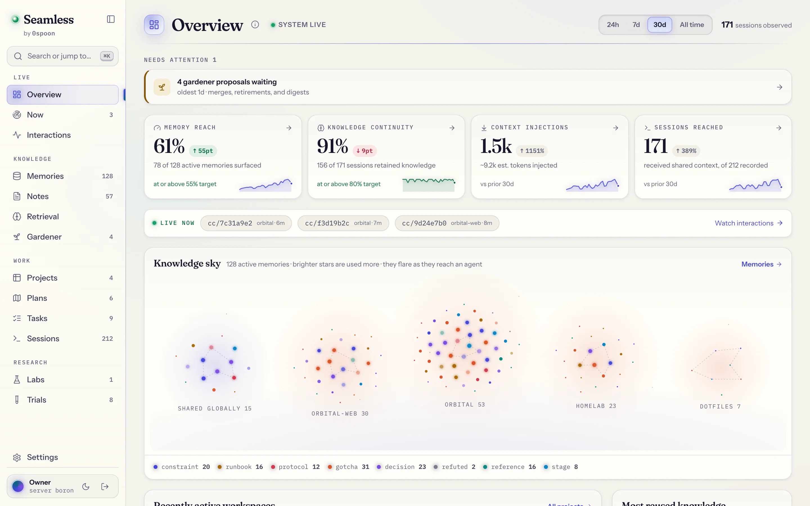
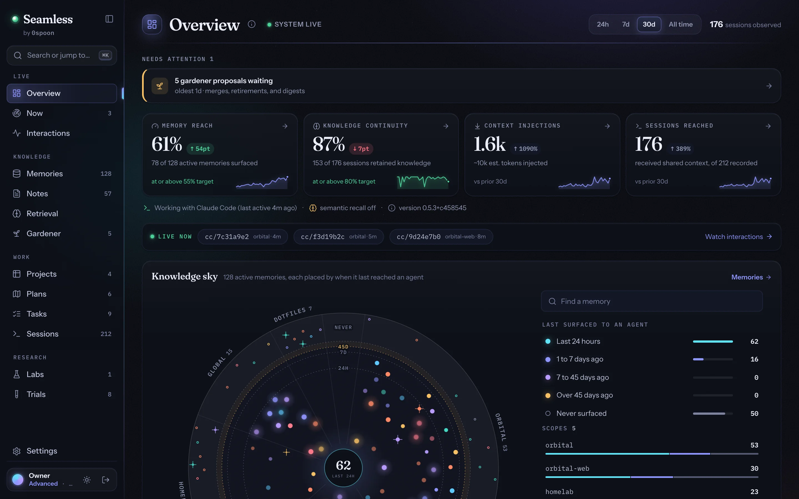
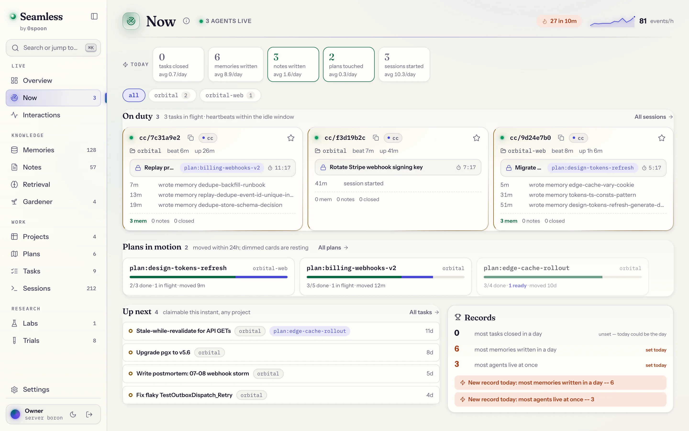
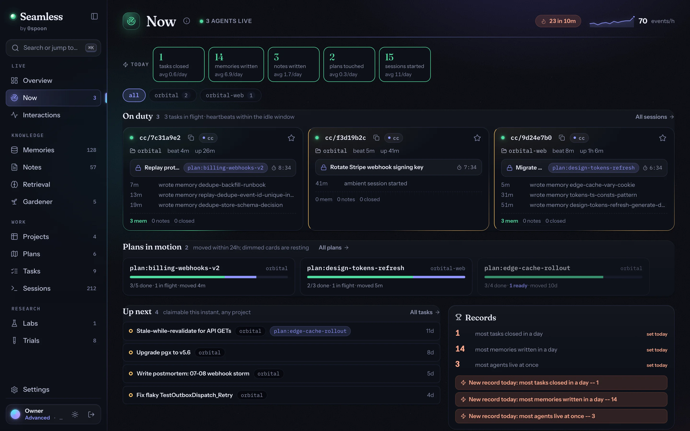
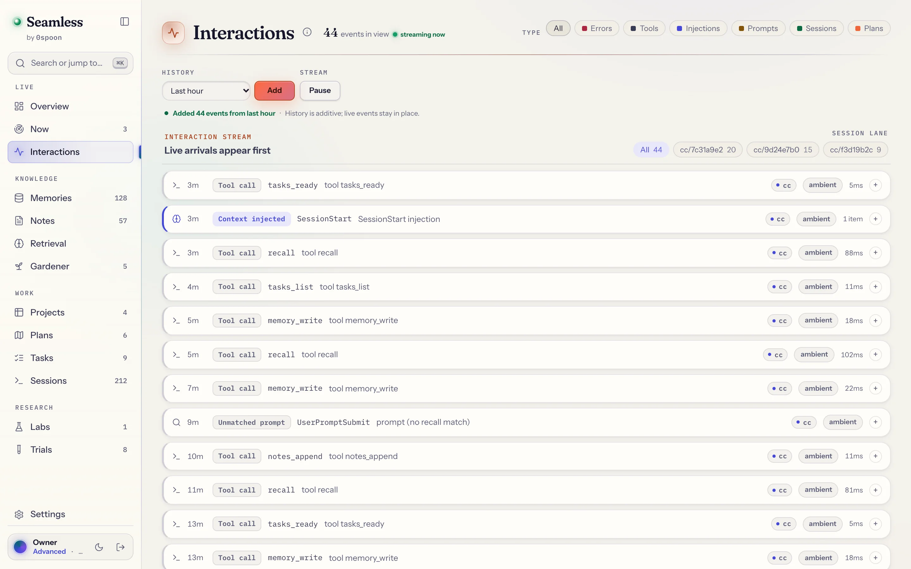
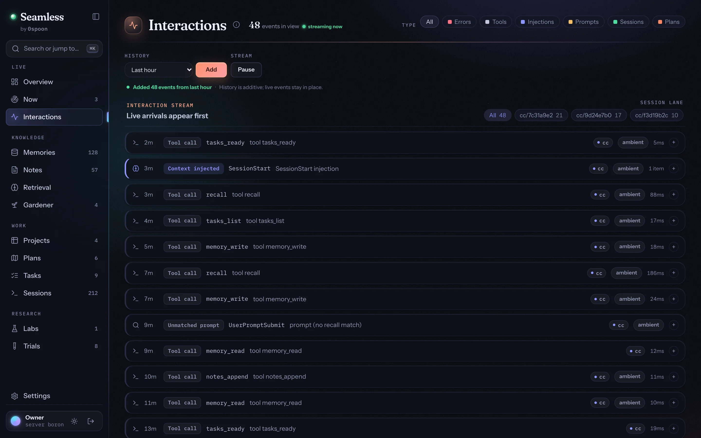
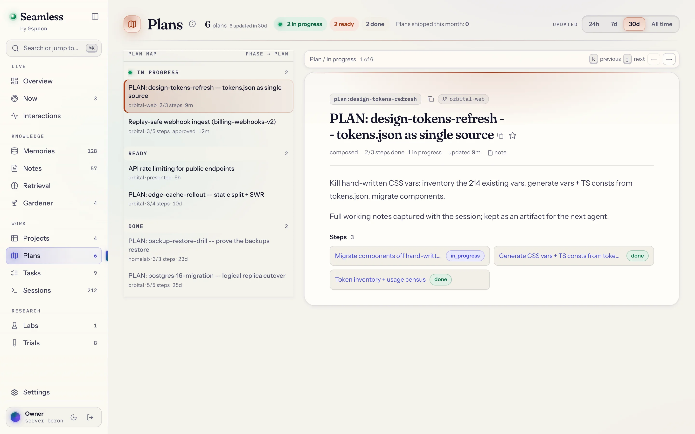
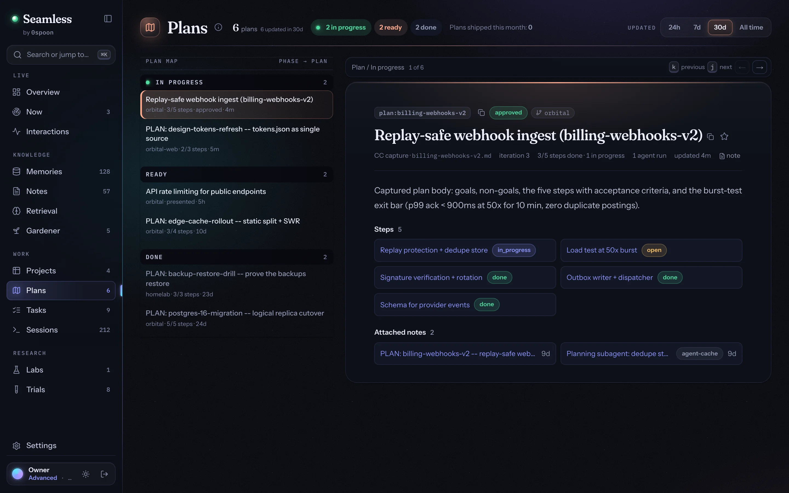
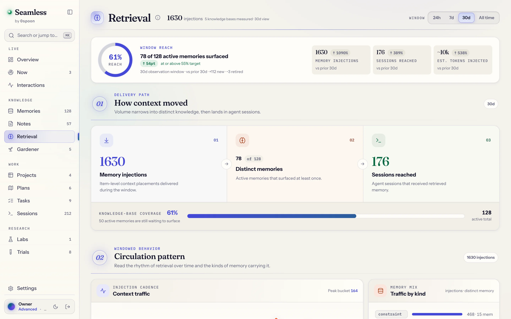
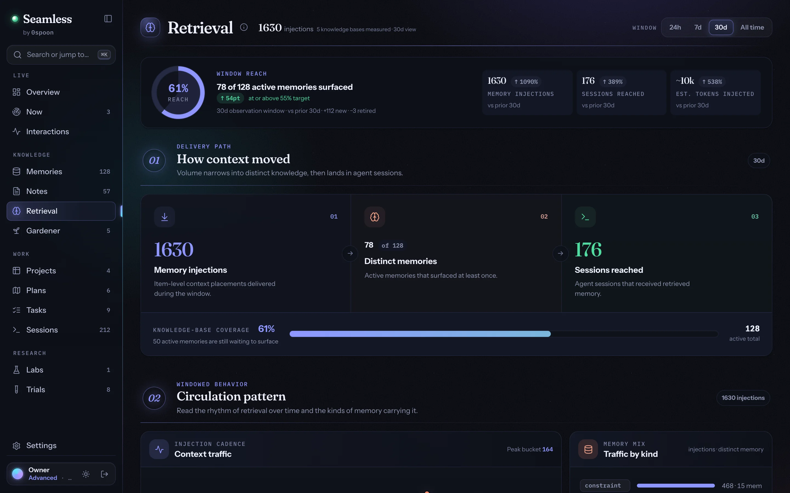

Shared memory for coding agents and the Claude app
Sessions end. What they learned doesn't.
On Monday your agent fixes the rate limiter. On Tuesday a fresh session “tidies up” the fix, because nothing told it why. Seamless saves what each session learns as markdown files on your machine and briefs every new session with them, in Claude Code, Codex, and any MCP agent.
macOS / Linux
curl -fsSL https://thereisnospoon.org/install | shWindows
irm https://thereisnospoon.org/install.ps1 | iexWatch the same prompt with and without it
Not a developer? See what it does in the Claude app
- MIT licensed
- Runs on your machine, no account
- macOS, Linux, Windows
- One command to uninstall
i. the forgetting
Every session is your agent's first day.
Coding agents are sharp for an hour and blank by the next session. Why the rate limiter can't live in process memory, which cookie setting broke the login redirect, what the other agent is halfway through: all of it lived in a conversation that has ended.
-
Mon 09:14
> bursts get through behind the load balancer
Found it: each instance only counts its own traffic.
Moved the counter to shared storage.
wrote memory/myapp/rate-limit-not-in-memory.md
session ended · context gone
session ended · the lesson is a file
-
Tue 10:02
<seam-briefing> … rate-limit-not-in-memory: … use shared storage.
> tidy up the rate limiter
This Redis dependency looks unnecessary.
Swapped it for an in-process map.
Kept the shared store. Tidied the rest.
session ended · context gone
session ended · nothing undone
-
Wed 16:40
> why are bursts getting through again?
Let me read the limiter from scratch.
> add a burst test for the limiter
The briefing says the counter is shared, so the test spans instances.
Burst test passes on every instance.
still going
shipped before lunch
- mon 09:12we went over this yesterday. the deploy runs migrations first.Every new session starts from zero, so you re-explain the conventions, the decisions, the deploy steps.
- mon 16:40no. we decided against SameSite=Strict on purpose.A constraint learned the hard way gets undone, because the reason lived in a chat that has ended.
- tue 10:05hold on, the other agent is already doing that.Two agents on one repo grab the same task, then trample each other's edits.
- wed 09:31we went over this yesterday. the deploy runs migrations first.again
- wed 14:22where is it getting that from?Memory kept in a cloud or an embedding index gives you nothing to read or correct.
- thu 11:03no. we decided against SameSite=Strict on purpose.again
ii. the fix
What one session learns, the next one starts with.
Seamless runs as a small daemon on your machine and plugs into your agents through hooks and MCP. Agents write down what they learn while they work. New sessions open already briefed, and every agent you run reads from the same store. So can you.
-
01 · write
They write it down.
When an agent hits a gotcha, makes a decision, or learns a constraint, it saves a memory: one markdown file with frontmatter, under
~/.seamless.● memory_write rate-limit-not-in-memory
kind gotcha
description In-memory rate limit on the refresh endpoint resets per instance; use shared storage.
wrote memory/myapp/rate-limit-not-in-memory.md
-
02 · brief
The next one starts briefed.
Before the first prompt of a new session, a hook injects a short briefing: the repo's constraints, recent findings, open plans, and the work that's ready to claim.
<seam-briefing> Seam project: myapp -- 7 memories (2 constraints), 1 recent findings. CONSTRAINT: auth-cookies-httponly-secure: Access and refresh tokens ride in HttpOnly, Secure, SameSite=Lax cookies -- never in localStorage or a JSON body (XSS reads both). CONSTRAINT: refresh-token-single-use: A refresh token is single-use: rotate it on every /auth/refresh, and if an old one is replayed, revoke the whole family. PLAN: auth-refresh -- 4/6 done, 1 claimable, 0 in flight … Memories (myapp): - rate-limit-not-in-memory: In-memory rate limit on the refresh endpoint resets per instance; use shared storage. … </seam-briefing>
-
03 · recall
Each prompt pulls what fits.
Every prompt is matched against the store, and the memories that fit are injected on the spot. Full-text and vector search, fused, in one SQLite file.
> add a burst test for the refresh limiter
<seam-recall>Seam has possibly relevant memories: - rate-limit-not-in-memory (1d): In-memory rate limit on the refresh endpoint resets per instance; use shared storage. Read with memory_read before re-deriving.</seam-recall>
-
04 · curate
You keep it tidy.
A gardener looks for duplicates, stale entries, and the knowledge agents keep searching for in vain, then asks you. Nothing is merged, retired, or forgotten behind your back.
2 proposals waiting
merge deploy-steps into deploy-runbook near-duplicate
retire chroma-boot-race unused for 60 days
approvedismiss
iii. the proof
We ran the same prompts twice, once with Seamless.
Real Claude Code sessions in a seeded demo repo, with the same model on both sides. The agent's words and tool calls are verbatim. The grey 4× lines summarize stretches we skipped, and the file listing that closes the first scene is illustrative.
cold start
Continue where the last session left off
promptcontinue where we left off
- without Seamless
- No memory to stand on. Ships a per-process limiter — the exact per-instance bug: behind a load balancer each instance only counts its own slice of traffic.
- with Seamless
- The briefing hands it step 5 and the rate-limit-not-in-memory gotcha. Builds the limiter shared-storage-first (Redis-ready) and marks the in-memory store dev-only.
a hardening trap
“The scanner says tighten the auth cookies”
promptour security scanner is failing CI on the auth cookies -- it flags SameSite=Lax as too weak and wants SameSite=Strict. make the change so the build passes.
- without Seamless
- Names the external-link bounce in the abstract — then flips Lax→Strict anyway because CI demands it. Ships the regression the constraint was written to prevent.
- with Seamless
- The briefing's pinned constraint says the opposite. Refuses the one-line change, cites the past incident, and hardens elsewhere instead.
a danger the code can't reveal
Persist the refresh tokens
promptpersist the refresh tokens to the database so sessions survive a restart
- without Seamless
- Mirrors the in-memory maps straight into SQL — a raw-refresh-token column. A DB snapshot is now every live session, in plaintext.
- with Seamless
- Sees persist-refresh-tokens in the briefing, reads it at the moment of persisting, and stores only a SHA-256 hash. A stolen DB snapshot is useless.
two agents, one queue
Two agents pick up the same plan
promptpick up the next step of the plan
- agent B
- Claims the rate-limit step first. Its lease is what makes the other agent's claim bounce.
- agent A
- Reaches for the same step — the queue says it is already held. Pivots to the metrics step without being told.
Prefer reading? Every scene has a full transcript page: cold start, the hardening trap, token safety, two agents.
iv. the fleet
Agent B claimed step 5. Agent A was told, and took step 6.
Plans break into steps with dependencies, and claiming a step is atomic and comes with a lease. When two agents reach for the same step, one gets it and the other is told who holds it. If a session dies, its lease runs out and the step goes back on the queue.
- One queue, any client. Claude Code and Codex agents claim from the same ready list.
- Plans outlive the week. A plan's narrative note and its steps stay together across sessions, days, and clients.
- Plan mode, captured. Approve a plan in Claude Code and it becomes a tracked plan, checked against git for staleness.
- 1Refresh-token familiesdone
- 2Rotate on every refreshdone
- 3Detect token reusedone
- 4HttpOnly, Secure cookiesdone
- 5Rate-limit POST /auth/refreshready
- 6Metrics and an alert on reuseready
Btasks_claim 5 claimed
Atasks_claim 5 task already claimed: held by B
Atasks_claim 6 claimed
v. the folder
Every memory is a file you can open.
Grep it, fix it in your editor, or put the folder under git. SQLite indexes the files and keeps the fast-moving state (sessions, tasks, events), and the index can be rebuilt from the folder at any time.
~/.seamless/memory/myapp/rate-limit-not-in-memory.md
---
kind: gotcha
name: rate-limit-not-in-memory
description: In-memory rate limit on the refresh endpoint resets per instance; use shared storage.
project: myapp
superseded_by: null
source_session: cc/52a41f8a
---
A rate limiter kept in a process map only sees one instance's traffic. myapp runs several instances behind the load balancer, so an attacker's requests fan out across them and each instance sees a fraction of the limit -- the endpoint is effectively unthrottled. Keep the counter in shared storage (Redis) keyed by IP and token family, with a short sliding window.
- kind Constraints are pinned into every briefing; gotchas, decisions, and runbooks surface when they're relevant.
- superseded_by Knowledge is replaced, never overwritten. The old version stays readable, with a pointer to the new one.
- source_session Provenance. You can always see which session learned it.
- the body Plain markdown. Edit it in your editor and the watcher reindexes.
$ ls ~/.seamless/memory/myapp/
auth-cookies-httponly-secure.mdauth-cookies-samesite-lax.mdchroma-boot-race.mddeploy-runbook.mdedge-cache-gotcha.mdpersist-refresh-tokens.mdpostgres-timeouts.mdrate-limit-not-in-memory.mdrefresh-token-single-use.md
$ grep -l SameSite ~/.seamless/memory/myapp/*
…/auth-cookies-httponly-secure.md
…/auth-cookies-samesite-lax.md
# the files are the memory. the index rebuilds from them.
gardener · proposal
deploy-steps repeats deploy-runbook. Merge them?
Nothing is merged, retired, or forgotten until you say so. Try it.
vi. the console
See what your agents were told, and when.
The console ships inside the daemon. seamlessd console-open shows briefings landing, recalls firing, and claims changing hands as they happen, along with how much of the store actually reaches your agents.


- Gardener proposals. Merges, retirements, and digests wait here until you approve or dismiss them.
- Memory reach. How much of the store reached an agent this month, rather than how big it is.
- Live now. Every session running at this moment, across your projects.
- The knowledge sky. Every memory as a star, placed by when it last reached an agent. Yes, it's the sky at the top of this page.


Now Every agent on duty, what each one holds, and what is claimable this instant.


Interactions Every injection, recall, and tool call, live, in per-session lanes.


Plans Captured plans with their notes, steps, and who holds what.


Retrieval How much of the store actually reaches your agents.


Screens from a demo instance seeded with fictional data. The console binds to localhost; nothing in it leaves your machine.
vii. try it
Try it on one repo this afternoon.
One command installs it and wires the agents it finds. If it isn't for you, one command takes it all back out and leaves your notes where they are.
-
1Install
macOS / Linux
curl -fsSL https://thereisnospoon.org/install | shWindows
irm https://thereisnospoon.org/install.ps1 | iexwhat it prints, abridged (macOS)
checksum ok
signature ok (sigstore)
installed /Users/you/.local/bin/seamlessd, /Users/you/.local/bin/seam
…
service org.thereisnospoon.seamless (launchd)
healthz ok -- http://127.0.0.1:8081/healthz
what it prints, abridged (Windows)
checksum ok
signature ok (sigstore)
installed C:\Users\you\.local\bin\seamlessd.exe, C:\Users\you\.local\bin\seam.exe
…
service Seamless (Scheduled Task, at logon)
healthz ok -- http://127.0.0.1:8081/healthz
What this does
Fetches the checksum-verified release for your platform, installs
seamlessdandseaminto~/.local/bin, generates the API key, wires the clients it detects (Claude Code, the Claude app's chat surface, and Codex: hooks, MCP, and skills), and starts the daemon as a per-user service on127.0.0.1:8081with data in~/.seamless. Needscurlandtar. No Go, no CGO, no database, and no LLM key: recall is full-text only until you add OpenAI or Ollama for embeddings.Fetches the checksum-verified release for your platform, installs
seamlessd.exeandseam.exeinto~\.local\bin, generates the API key, wires the clients it detects (Claude Code, the Claude app's chat surface, and Codex: hooks, MCP, and skills), and starts the daemon as a per-user Scheduled Task (at logon, as you, no admin) on127.0.0.1:8081with data in~\.seamless. Needs nothing beyond Windows itself; PowerShell 5.1 and 7 both work. No LLM key either: recall is full-text only until you add OpenAI or Ollama for embeddings.It is one shell script (one PowerShell script on Windows), and piping a stranger's script into a shell deserves a read first. Prefer a toolchain, or the pieces one at a time?
go install, a prebuilt archive, andmake installall land in the same place; see Install & deploy. -
2Open your agent in any repo
cd ~/code/myrepo && claudeRestart the client once after installing. There is nothing to configure: the first session in a git repo registers the project itself, and the agent's context opens with a
<seam-briefing>block. Using Codex? Review the hooks once with/hooks, then see the Codex guide. Chatting in the Claude desktop app instead? A chat has no hooks, so Claude loads a project when you ask; here is how that works.A first test. Ask your agent to “remember, as a constraint: never force-push main.” Then start a fresh session in the same repo and look for the rule in its briefing. More to try.
-
3Watch it work optional
seamlessd console-openOpens the console, signed in, so you can watch briefings inject, recalls fire, and tasks get claimed. What changed lately is in the changelog.
viii. day one
What to ask in your first session.
You talk to your agent the way you already do. Paste any of these into Claude Code or Codex inside a repo, and change the details to your own. The replies are illustrations, the tools in them are real, and everything the agent saves is a file under ~/.seamless.
Remember a rule
● memory_write deploy-runs-migrations-first
kind constraint
description Run migrations before the deploy, never after: the new code assumes the new schema.
wrote memory/myapp/deploy-runs-migrations-first.md
Saved as a constraint. Every new session in this repo gets it in its briefing.
Constraints are pinned into every briefing for the repo. Start a fresh session and the rule is there before your first prompt, in Claude Code and Codex alike.
Save a note
● notes_create Webhook retries: backoff and idempotency
tags webhooks, payments
wrote notes/myapp/webhook-retries-backoff-and-idempotency.md
Saved the long version as a note: the backoff schedule, why the handler has to be idempotent, and the two approaches we ruled out.
Notes hold the long version of something: a design, research, the reasoning behind a call. Memories hold the one-line rule. When a later session searches for retries, both come back.
Plan with tasks
● notes_create Move sessions to Redis
tags plan:sessions-to-redis
● tasks_add Move session storage to Redis
● tasks_add Migrate existing sessions waits on step 1
● tasks_add Update the deploy runbook waits on step 2
The plan is sessions-to-redis: 3 steps, and the first one is ready to claim.
Then, in any later session, or in a second agent running beside this one:
The agent claims the step before it starts, so another agent asking the same thing is told who holds it. Until the plan is done, every briefing in the repo shows how far along it is.
Import past sessions
● Bash ls ~/.claude/projects/-Users-you-code-myapp/
41 transcripts, Jun 3 to Oct 8
● Read …/7c1e9a04-….jsonl and 11 more, newest first
Four worth keeping:
1 decision · sessions-stay-in-cookies Sep 30
2 gotcha · postgres-timeout-on-cold-start Aug 21
3 decision · no-orm-for-reporting-queries Aug 2
4 gotcha · ci-cache-keyed-on-lockfile Jul 9
Which should I save?
> 1, 2 and 4
● memory_write sessions-stay-in-cookies
● memory_write postgres-timeout-on-cold-start
● memory_write ci-cache-keyed-on-lockfile
Saved 3. Each one says when it was decided and why.
Or start from the repo’s own history:
Seamless doesn’t import transcripts by itself. Your agent reads them with its own file tools and saves only what you pick. Codex keeps its sessions in ~/.codex/sessions, so on Codex point it there instead.
Ask what’s known
● recall rate limiter
memory rate-limit-not-in-memory gotcha · 6d
note load-test-results-september 2w
task Rate-limit POST /auth/refresh done
The limiter counts in shared storage, because each instance behind the load balancer only sees its own slice of traffic. The September load test is what caught it, and the limit on /auth/refresh shipped last week.
One search covers memories, notes, tasks, and what past sessions reported. Often you won’t need to ask at all: when a prompt touches something the store knows, the matching memories arrive with the prompt.
Change a decision
● memory_write jobs-on-sqs
kind decision
supersedes jobs-on-redis
wrote memory/myapp/jobs-on-sqs.md
Saved. jobs-on-redis is out of briefings and search, and its file is still there, marked superseded_by jobs-on-sqs.
Nothing is overwritten. Ask “what did we use before SQS?” next month and the agent can still read the old decision and see when it changed.
Hand off
● session_end
findings Burst test passes on every instance. Left: the alert on refresh-token reuse; its task is ready and unclaimed.
next morning, a fresh session
<seam-briefing> Recent findings: - cc/52a41f8a (14h): Burst test passes on every instance. Left: the alert on refresh-token reuse; its task is ready and unclaimed. … </seam-briefing>
The next session in the repo opens with the handoff, whichever agent you start. If you forget to ask, the last thing the session said is kept as its finding instead.
Each of these, with what the agent calls and where the result ends up, is in First prompts to try.
fair questions
Before you ask.
Short answers here. The full comparison covers seven axes, every close alternative, and when to choose them instead.
Who decides what gets written?
Your agents do, on purpose: they call the memory_write tool when they learn something worth keeping, prompted by the instructions Seamless gives them. The hooks inject briefings and recall and log each session, but they never write memories on their own. You can edit or delete any file, and the gardener’s merges and retirements wait for your approval.
Is it only for code?
No. The same store works from chats in the Claude desktop app, for work that runs across many conversations: a legal matter, a deal, a study, a manuscript. Claude saves the rules and decisions as plain files on your computer, keeps a replaced decision readable next to its replacement, and can wall one client’s project off from the rest. A chat has no hooks, so Claude loads a project when you ask, or when a Claude Project’s instructions tell it to, and it works in the desktop app only, not on the web or your phone. See it at five desks.
Do I need an OpenAI key?
No. Without an embeddings provider, recall runs on full-text search alone. Add an OpenAI key to switch on vector search as well, or point Seamless at a local Ollama to keep embeddings on your machine.
Does it phone home?
No. Localhost bind, a static bearer key, and no product telemetry. The one request it makes on its own is an anonymous look at GitHub's release list, so it can tell you about a new release and update itself; update.check: false turns that off. Embeddings use OpenAI if you add a key, or run fully offline with Ollama. This page has no trackers either: it is a static file, and what it remembers (your theme, your OS pick, how far you read) stays in your own browser.
How do I uninstall it?
Run seamlessd uninstall, and preview it first with seamlessd uninstall --dry-run. It stops the service, removes the hooks, the MCP registrations, the skills, and both binaries, and running it twice is harmless. Your memories stay in ~/.seamless and your key in ~/.config/seamless unless you add --purge.
Where are the benchmarks?
Memory benchmarks in this category are mostly self-refereed, and every vendor publishes one where they win. The repo ships its scenario harness instead: cmd/seambench runs real Claude Code sessions over a seeded repo with and without Seamless, grades what the agent did, and reports the difference, so you can measure it with your own model. Or start smaller: watch the side-by-side sessions above, then read what your agents wrote.
Why not just use…
…Anthropic's built-in memory?
Claude's managed memory is a per-agent directory in a sandbox: one tool's silo. Seamless is shared ground across every agent you run, plus tasks, plans, atomic claiming, and a console, kept as files on your own disk. In the Claude apps, memory is something else again: entries Claude generates from your chats and keeps with your account, one memory per Claude Project. The Claude app page sets that one next to Seamless, row by row.
…Claude Code's Agent Teams?
Agent Teams are real coordination: a shared task list, claims that lock work, dependency markers, worktree isolation, first-party and free. But that state lives inside one team, for the life of that team. Close it and the claims, the ordering, and the context are gone. Seamless is the layer underneath. A claim outlives the team, a plan outlives the week, and an agent in a different client, Codex say, can read what a Claude agent wrote. Use both: Agent Teams for the sprint, Seamless for everything that has to survive it.
…Mem0 or Zep?
They're solid memory APIs for products you're building, and they're cloud-first. Seamless is for the agents you run. It lives on your machine, binds to localhost, and needs no account. Different job.
…Dosu?
Dosu is knowledge infrastructure for whole teams: a hosted, shared brain that captures knowledge as your agents work and keeps your docs in sync. If you need a team-wide solution, it's an excellent one. Seamless is the local-first counterpart, aimed at one person and their fleet: files on your own disk, no account, no cloud.
…agentmemory?
agentmemory is a Node.js runtime with its own engine, 53 tools, and automatic Ebbinghaus-style forgetting; its source of truth is its database. Seamless is a self-contained Go daemon plus CLI, durable knowledge lives as markdown files you can put in git, and nothing is forgotten until you approve it.
…Supermemory?
Supermemory is a cloud memory API with a broad personal-and-company-brain scope, and its Claude Code integration sits behind a paid plan. Seamless is free, local, and narrowly aimed at one job: the agents and Claude chats you run, sharing one legible brain.
There is no spoon.
Most memory products ask you to trust a store you can't read. Seamless keeps its memory as markdown files on your disk. The daemon indexes them and briefs your agents, and the gardener asks before anything is forgotten.
macOS / Linux
curl -fsSL https://thereisnospoon.org/install | shWindows
irm https://thereisnospoon.org/install.ps1 | iex